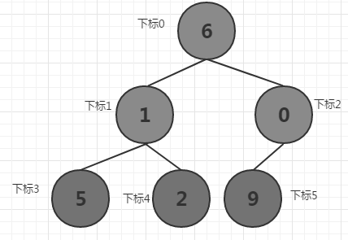
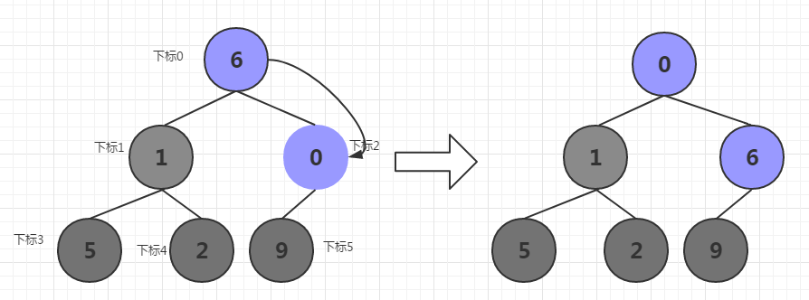
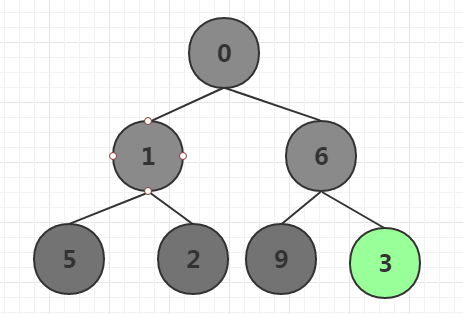
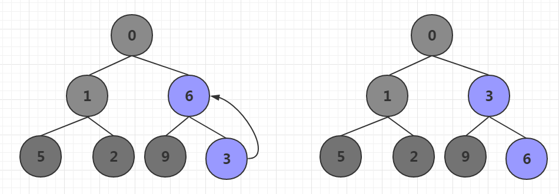
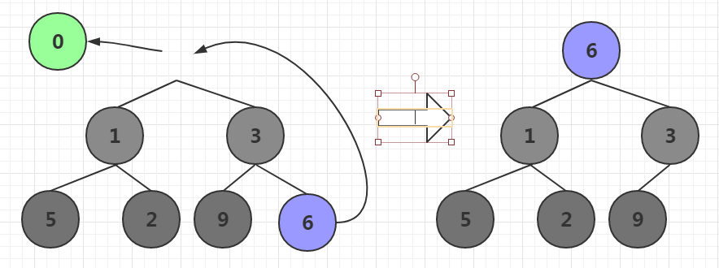
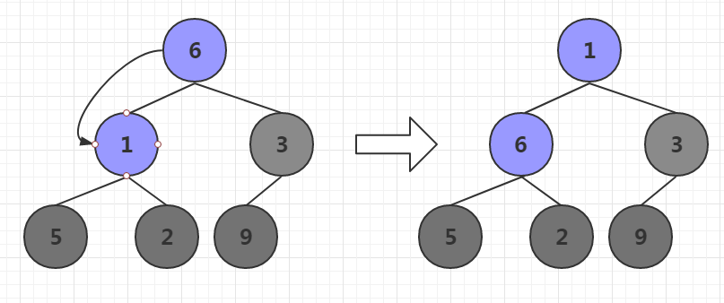
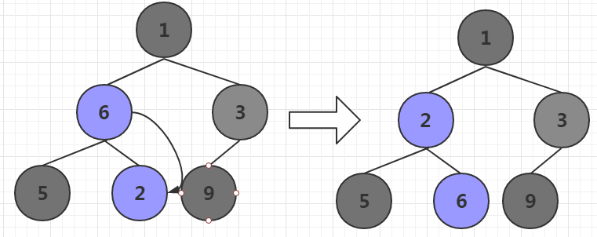

后端开发常常需要设计定时器，介于现在可用的网络库和第三方库较为全面，所以不需要我们自己造轮子了，有时候做技术开发需要知其然，知其所以然。定时器的实现有很多种方式，采用小根堆实现定时器是较为常见的一种。
一个假定的定时器结构
如果用golang实现，定时器的每个任务应该包含如下结构
1 | type HeapEle struct { |
当我们将任务加入定时器时，实际就是将回调函数(callback)和参数(params)以及截至时间(deadline)保存好放到小根堆中。每次从堆顶pop出截止日期最小的任务，调用回调函数执行任务。如果是一次性任务执行完就不需要加入堆，如果是轮询任务，则执行完继续加入堆中。
好，我们先不讨论堆的问题，先写一个demo模拟定时器任务如何callback的。
在main函数中
1 | //任务截止时间 |
我们new了一个任务(HeapEle)对象，设定了回调函数和参数以及截止日期。接下来在main函数中继续模拟定时器到期情况
1 | time.Sleep(time.Duration(time.Second * 11)) |
定时器时间到期后触发callback，输出如下
1 | 1 |
好了，上面模拟了一个简易的定时器调用过程和基本数据结构，这只是定时器要完成的一个核心部分，第二个核心部分是如何对任务进行排序和增删，这就要引入小根堆来管理任务了。
小根堆
小根堆根据任务截止时间，将截止时间小的放在堆顶，为了方便讲述原理，我们将任务序列简化为一个int型数组，每个元素为int数值表示截止时间。
将任务序列初始化为小根堆
假设任务序列为[6,1,0,5,2,9]，我们将所有元素构造为完全二叉树

将这个完全二叉树调节为小根堆，首先从最后一个非叶子节点开始，将其子树调节为小根堆，然后一次从右往左，从下往上处理，直到根节点所在子树全部处理完成。
这个过程和前一篇讲述的构造大根堆类似，我们再重新讲解一遍。最后一个非叶子节点为下标2的元素0，因为0比其左节点9小，所以不需要调节，此时下标2所在子树为小根堆。
接下来从右往左，从下往上，依次处理，处理下标为1的元素1,1比其两个子节点都小，则不需要调节，下标1所在子树为小根堆。
接下来处理下标为0的元素6，6比其最小的子节点0小，所以二者交换位置。调整后继续判断，6比其左节点9小，则不需要交换，否则继续交换不断向下调整。直到为叶子结点或者满足小根堆需求。

到目前为止，小根堆已经构造完毕。
小根堆插入新节点
如果最后一个非叶子结点没有左节点，将新节点插入到最后一个非叶子节点的左节点，否则插入右节点。
例如在上述小根堆中插入新节点，元素值为3，现将其插入下标为2的节点的右节点。

新节点元素值3比其父节点元素值6小，所以将3上移

移动后元素3比其父节点元素0大，所以不需要继续上移，否则继续上移，直到满足小根堆或者元素3移动到根节点。
小根堆对顶元素pop
还是上边的小根堆，取出堆顶元素0，后如何快速构造小根堆呢？当然可以将剩下的元素当做序列重新构造小根堆，这么做是可以实现的，毕竟之前我们的堆排序是这么做的。除此之外，给大家推荐一个方便快速的方法，就是将最后一个叶子节点放到根节点位置，然后不断向下调节根节点使其满足小根堆为止。

删除后继续调整对顶元素6，其两个子节点元素1和元素3,1是最小的，所以将6和1位置交换。

交换后6比其最小的子节点2还大，所以继续下调，直到6为叶子结点或者满足小根堆条件。

这样一个小根堆就调整好了。
代码实现
上边讲述了小根堆的构造，插入，删除等操作，大根堆和小根堆类似，这里定义了大根堆的基本结构和交换操作。读者可以这些大根堆的代码仿写小根堆，当做读后习题。
1 | type BigRootHeap struct { |
初始化一个大根堆
1 | func (bh *BigRootHeap) initHeap(array []int) { |
节点下调
1 | func (bh *BigRootHeap) adjustDown(array []int, index, length int) { |
节点上调
1 | func (bh* BigRootHeap) adjustUp(array []int, index, length int){ |
插入节点
1 | func (bh* BigRootHeap) insertNode(node int){ |
取出堆顶元素
1 | func (bh *BigRootHeap) popBigRoot() (bool, int) { |
初始化堆，增加节点，删除节点这些基本操作已经实现了。
思考和总结
上述两部分分别介绍了定时器任务的基本结构和小根堆的操作，以及大根堆代码的实现，你可以将大根堆仿写成小根堆吗？然后结合你的小根堆和定时器数据结构，做一个定时器吗？自己试着做一做吧，定时器触发的基本思路是这样
1 | for{ |
到此为止，介绍完毕。
源码下载地址
谢谢关注我的公众号